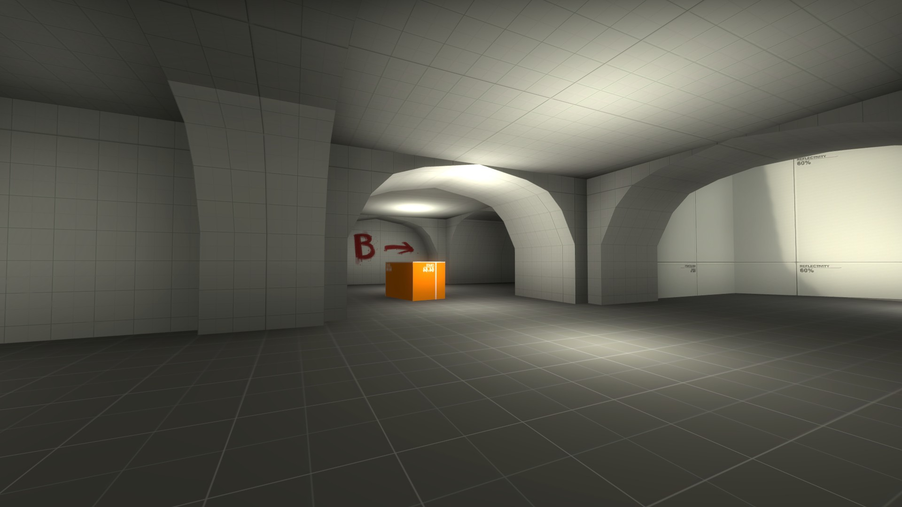

April 16, 2023
New Route to the Bomb Site!
Rush B no stop! New update for my latest creation de_alleyway. The route to b-site has be drastically altered. It now goes into the sewers, under the map. I was really unhappy with how the route was playing. The way to b-site should ironically be a straight shot to the site basically.
B Site Secure
It's been hard work getting B Site to feel good. I finally feel like that it's gotten to the point where the bomb site plays how I want it to. That being two battles happeneing. One across the bridge over to the bomb site, and the other underneath.
Above is the bomb site and below is the sewer route to it.
April 9, 2023
Pretty Mid I Guess
Not a lot of updates this week, mainly just working on Mid. I added a small porch for cover but I'll need to play test it to see how it works.